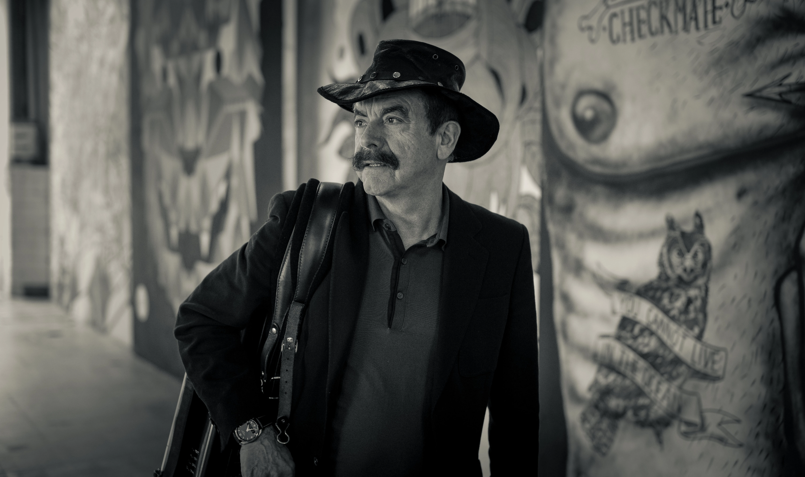

QUIM
BARREIROS
Num palco ou na garagem da vizinha


SOBRE O REI
Ainda criança, Quim Barreiros bebeu os ensinamentos musicais da grande tradição minhota:
os viras, os malhões, as chulas e canas-verdes. Na adolescência viajou por Portugal inteiro,
já a tocar acordeão em ranchos folclóricos com os quais tomou contacto com muitos outros géneros musicais do nosso país.
Com vasta fama nacional desde a década de 1980, Quim Barreiros é conhecido pelas suas letras de duplo sentido.
É também, desde há décadas, um dos músicos mais bem-sucedidos em termos de popularidade junto do público português, no género conhecido como música pimba
| Nome | Joaquim de Magalhães Fernandes Barreiros |
| Nascimento | 19 de junho de 1947 |
| Comida favorita | Bacalhau |
| Fun fact | Já tocou acordeão com o Zeca Afonso |
NOVIDADES
PARA OUVIR
QUANDO É O MÊS DO PRIDE